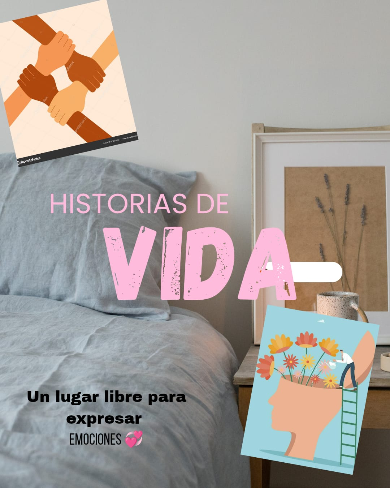

Grupo 1: Historias De Vida
Integrantes: Paula Acosta - Florencia Castillo - Claudia DeCésare - Rosana Santos
Un lugar libre para expresar emociones.

Bienvenidos al espacio de comunicación digital del CENS 451 "Paulo Freire". En este podcast compartimos historias, opiniones, investigaciones y experiencias sobre temas que nos interesan e impactan en nuestra comunidad.

Integrantes: Paula Acosta - Florencia Castillo - Claudia DeCésare - Rosana Santos
Un lugar libre para expresar emociones.

Integrantes: Tobías Amado - Victoria Méndez - Román Rosales - Joan Vargas
Entre likes y seguidores, describimos lo que hay detrás de las redes.
Integrantes: Ignacio Camargo - Magalí Nicolás - Guillermo Orellano - Ezequiel Perotti
Dialogamos sobre temas en general.

Integrantes: Agustín Altare - Thiago Góngora - Guillermo Orellano - Fiamma Seijo
Dialogamos sobre temas profundos que afectan a la sociedad toda, hoy es la Homofobia.

Integrantes: Emiliano Aguerrido - Lautaro Ferreyra - Lautaro Linares - Josué Lucero
Cómo afecta la tecnología en nuestras vidas y principalmente la Inteligencia Artificial.